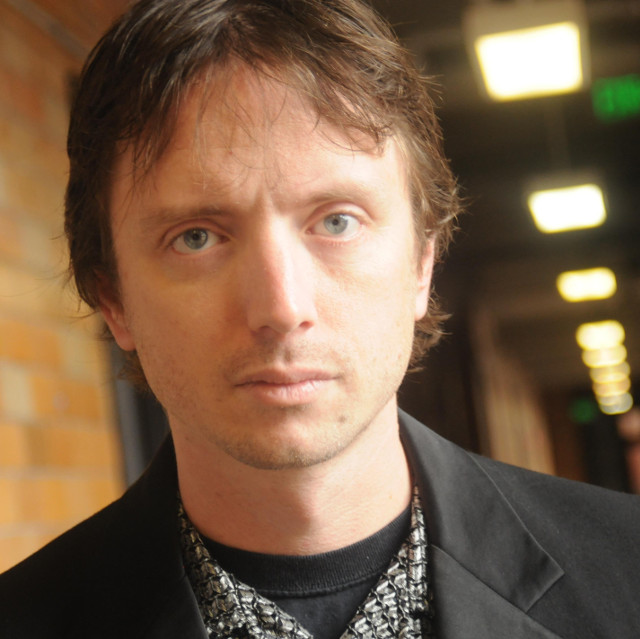
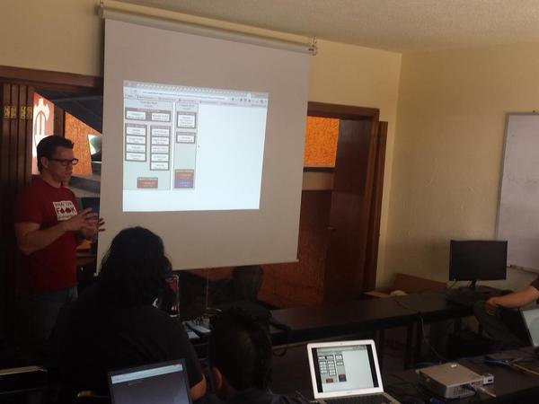
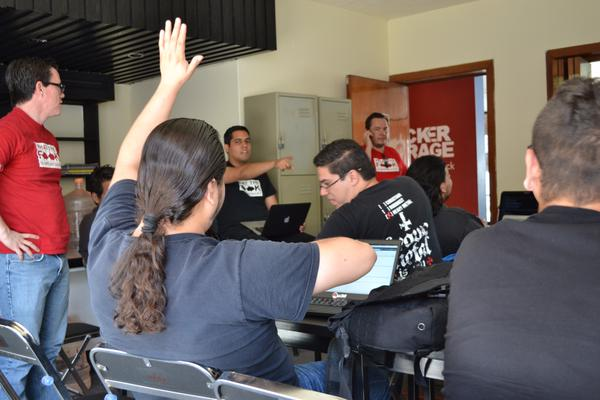
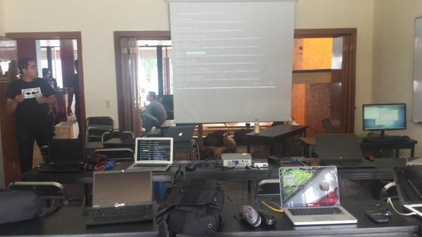
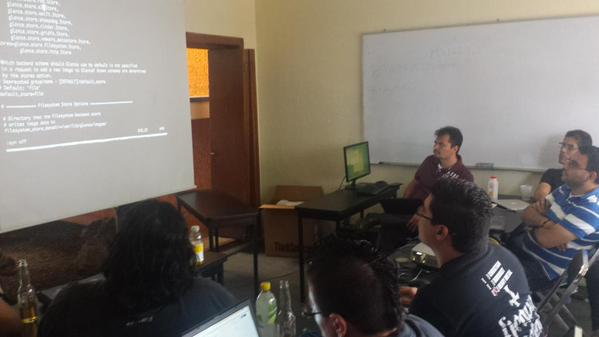

Eventos
Nos reunimos cada mes
Asiste

OpenStack Groups
Comunidad OpenStack
Comunidad

Grupo de discusión
Participa activamente
Únete

@OpenStack_gdl
Siguenos en twitter
Síguenos
Proximos eventos
21 Septiembre 2015
- Monty Taylor @ OpenStackGDL

En Septiembre cumplimos un año y Monty Taylor vendra a Guadalajara para dar la charla principal, este sera un evento especial y de celebración asiste.
Monty es itegrante del Comité Técnico de OpenStack y de la Python Software Foundation. Es -por decisión- un hacker de Python. Monty fue PTL (Project Technical Lead) en el programa de Infraestructura de OpenStack estableciendo el modelo de CI de OpenStack conocido como "The gate". Ha dirigido equipos de infraestructura para el desarrollo de OpenStack, así como en la implementación de OpenStack (TripleO) y OpenStack Bare Metal (Ironic).
Tiene una licenciatura en dirección teatral y un posgrado en diseño de iluminación por CalArts. La interacción entre áreas lo ha llevado a iniciar más de un negocio alrededor del desarrollo tecnológico para espectáculos en vivo. Continúa trabajando en teatro y en el último año se ha encargado de la iluminación de espectáculos en Nueva York, Seattle y Austin.
Eventos pasados
15 Agosto 2015
- OpenStack Installfest
El proximo 15 de Agosto estaremos en el Hackergarage Llevando a cabo lo que sera nuestro primer installfest de OpenStack
Trae tu propia computadora, cables de red, routers para que instales tu Nube basada en OpenStack. Cupo Limitado




20 Julio 2015
- VPNaaS con OpenStack - @gnuowned
En esta charla hablamos sobre la arquitectura y funcionalidad del módulo de VPNaaS de OpenStack, haremos una demostración de su funcionalidad y platicaremos sobre tu potencial y futuro.
15 Junio 2015
18 de Mayo 2015
23 Marzo 2015
16 Febrero 2015
19 Enero 2015
10 Noviembre 2014
20 Octubre 2014
22 Septiembre 2014
22 Julio 2014
Videos
15 de Junio 2015
18 de Mayo 2015
10 Noviembre 2014
{kind=link}
{kind=link}
{kind=link}
{kind=link}